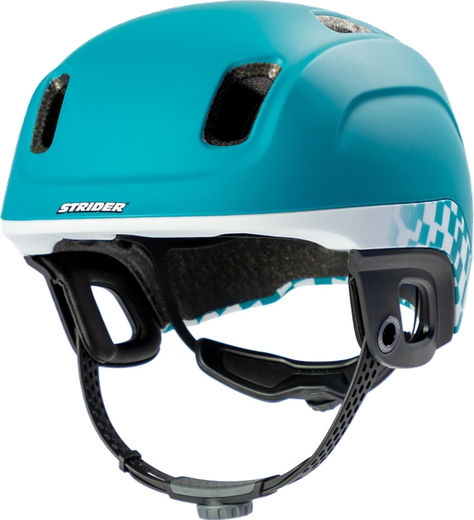
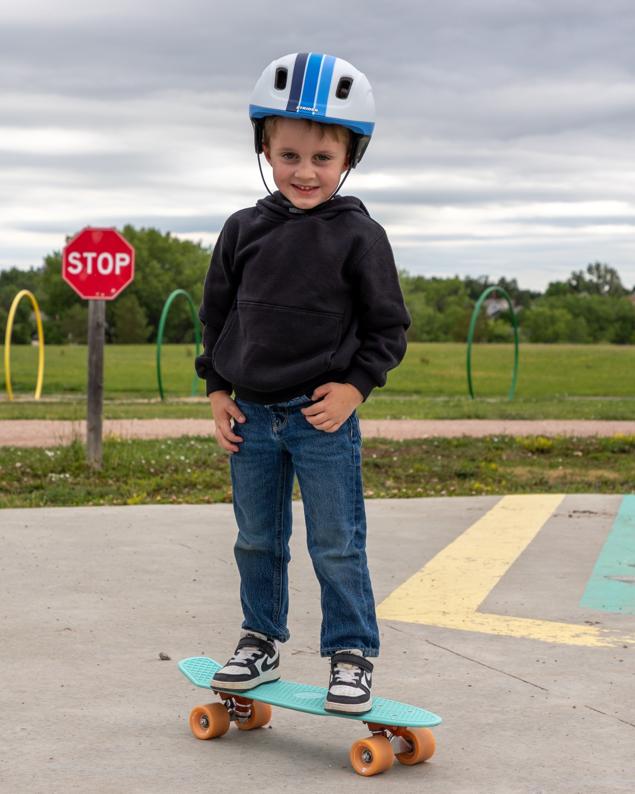
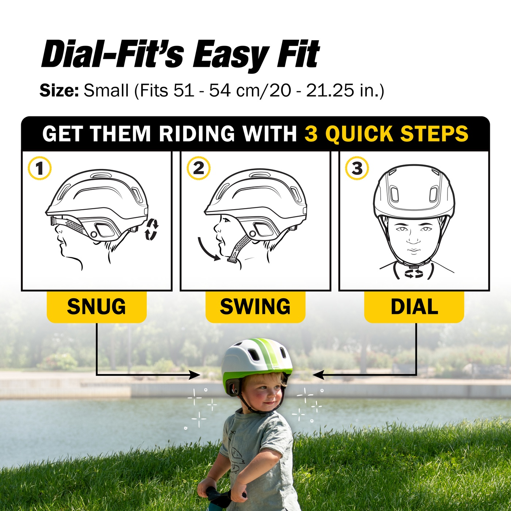

The kids' helmet they put on all by themselves.
Meet the Strider® Dial-Fit Helmet — no buckles, no pinching, no tears. Just pull the strap down, turn the dial, and ride. Set it once and they've got it from there.
Getting a helmet on shouldn't be a fight.
Traditional buckles pinch little chins, tangle in fingers, and hide where kids can't see them. So the helmet ends up loose, crooked, or off altogether — and research shows 96% of parents can't get a helmet to fit correctly. A helmet that doesn't fit isn't just frustrating. It's the whole problem.
No buckle. Just a dial.
The Dial-Fit Helmet replaces the fiddly buckle with a soft chinstrap and a rear dial. Get them riding in three quick steps — then let them take it from there.
Snug it up
Pop the helmet on and turn the rear dial until it hugs their head just right.
Swing it down
Swing the buckle-less chinstrap down under the chin — nothing to pinch, nothing to clip.
Dial it in
A few easy turns evenly tightens both sides for a snug, comfy fit. They can even do it one-handed.
Set the fit once — and your kid can put their helmet on themselves, ride after ride.
Watch the dial do the work.
One smooth motion — strap down, dial in. Here's the HighBar® fit system up close.
A helmet only protects when it fits.
Loose straps, a helmet that slides, or a gap you can fit your whole hand into — that's not protection. The Dial-Fit Helmet takes out the guesswork and gives you a reliable, snug fit every time.
A badly-fitting helmet raises a child's odds of head injury by 3.4 times. A dialed-in fit is a safer ride.
of parents can't fit a traditional helmet correctly. The Dial-Fit Helmet makes the right fit the easy fit.
Meet the Dial-Fit Helmet.
The whole story in under a minute — the fit, the feel, and why kids love putting it on themselves.
A color they'll actually want to wear.

Three checkers. Three stripes. One easy yes.
Every Dial-Fit Helmet comes in the same tough, lightweight build — pick the look they'll be excited to buckle up (well, dial up) every time.
Shop the Dial-Fit Helmet →Light enough they'll forget it's on.
Just 290 grams
Feather-light so it never weighs down a small head — they'll actually keep it on.
No pinch, ever
The flexible chinstrap sits comfortably against the chin — no buckle to bite.
Plush, breathable padding
Cushioned and vented to stay cool and comfy from the first ride to the hundredth.
Made for every kind of ride.
Balance bike today, big-kid adventures tomorrow. The Dial-Fit Helmet is built to protect them wherever the wheels take them.
- Balance & pedal bikes
- Scooters
- Skateboards
- Riding along as a passenger


Fits 51–54 cm — the dial does the rest.
Size Small fits head circumferences of 51–54 cm (20–21.25 in) — one size, with the HighBar® dial fine-tuning the fit as they grow, so it stays snug and secure ride after ride.
Find their fit →See how easy the fit is.
A quick walkthrough of dialing in the perfect fit — strap down, dial in, ready to ride.
Try it for 30 days — on us.
Every Strider® helmet is backed by our 30-Day Money-Back Guarantee. Dial it in, ride it, and if it's not the right fit, send it back.
Before you buy
How is a dial-fit helmet different from a normal one?
Can my child really put it on by themselves?
What size is it and who does it fit?
Is it safe / certified?
What can they wear it for?
Returns & guarantee?
Give them a helmet they'll actually want to wear.
No buckles. No battles. Just a snug, safe fit they can do themselves — in six colors they'll love.